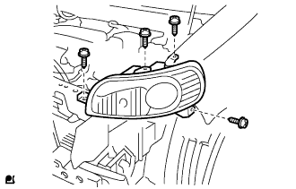

フォグランプのコネクタを接続する。
 |
フロントバンパサイドのツメのかん合を合わせ、クリップ2個およびスクリュ6本ボルト2本でフロントバンパカバーを取り付ける。
スクリュ2本でフロントバンパサイドブラケットRHおよびLHを取り付ける。
ヘッドランプASSY 取り付け |
| 1. ヘッドランプASSY LH取り付け |
|  |
各コネクタを接続し、スクリュ4本でヘッドランプASSY LHを取り付ける。
| 2. フロントバンパ カバー取り付け |
フォグランプのコネクタを接続する。
|
フロントバンパサイドのツメのかん合を合わせ、クリップ2個およびスクリュ6本ボルト2本でフロントバンパカバーを取り付ける。
スクリュ2本でフロントバンパサイドブラケットRHおよびLHを取り付ける。
| 3. フロントフェンダ ライナ RH取り付け |
スクリュ3本でフロントフェンダライナ RH(前部)を取り付ける。
| 4. フロントフェンダ ライナ LH取り付け |
| 5. ラジエータ グリル W/ラジエータ サポート シール UPR取り付け |
ラジエータ グリルとラジエータ サポート シール UPRを組み付ける。
 |
ラジエータグリル下部のツメを合わせ、クリップ6個でラジエータ グリル W/ラジエータ サポート シール UPRを取り付ける。